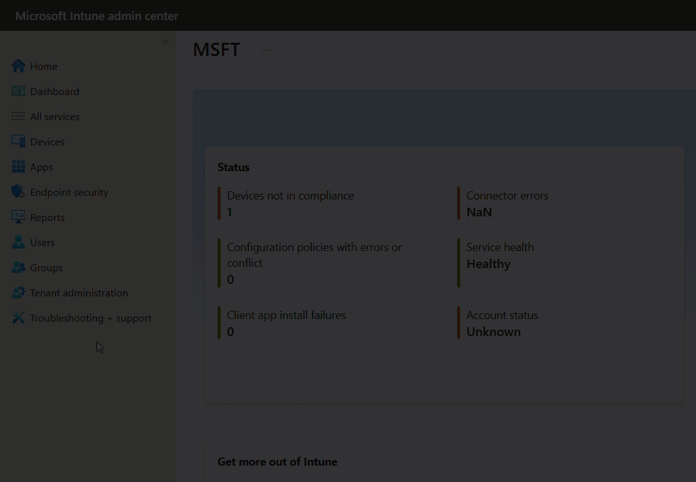
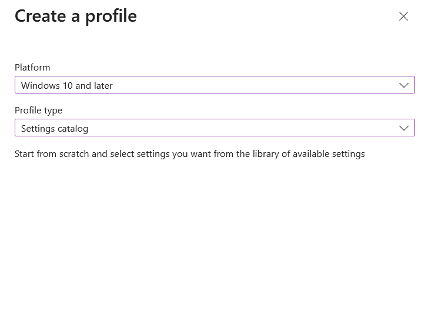
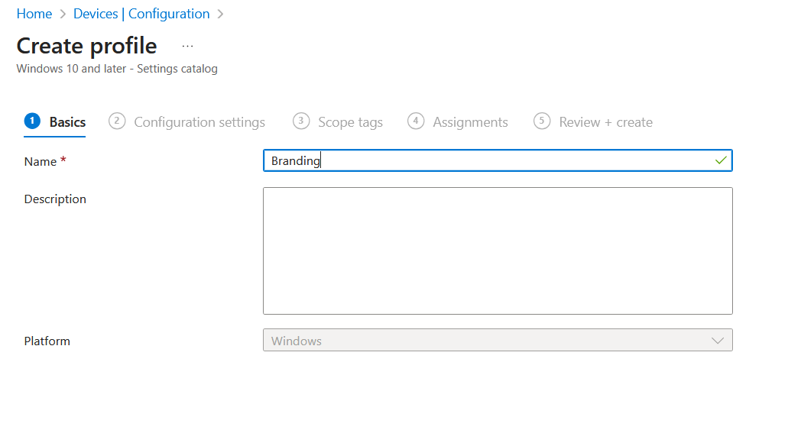
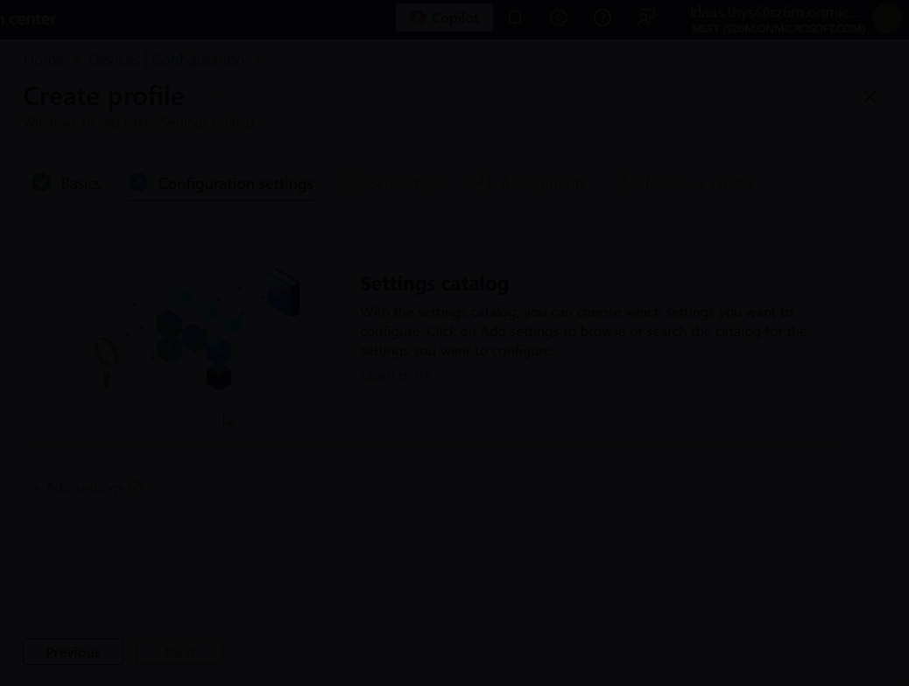
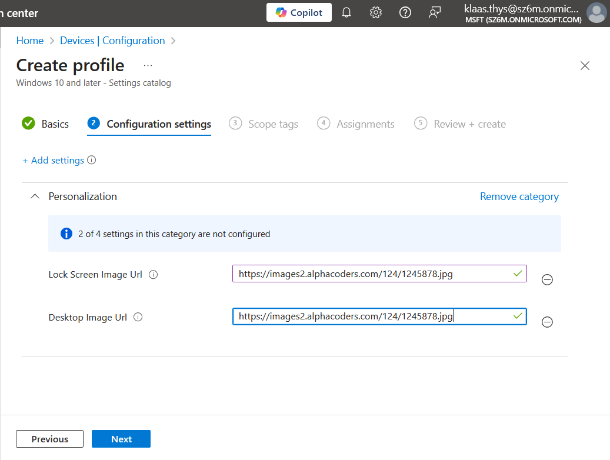
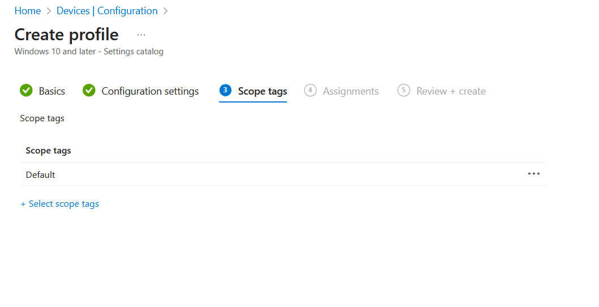
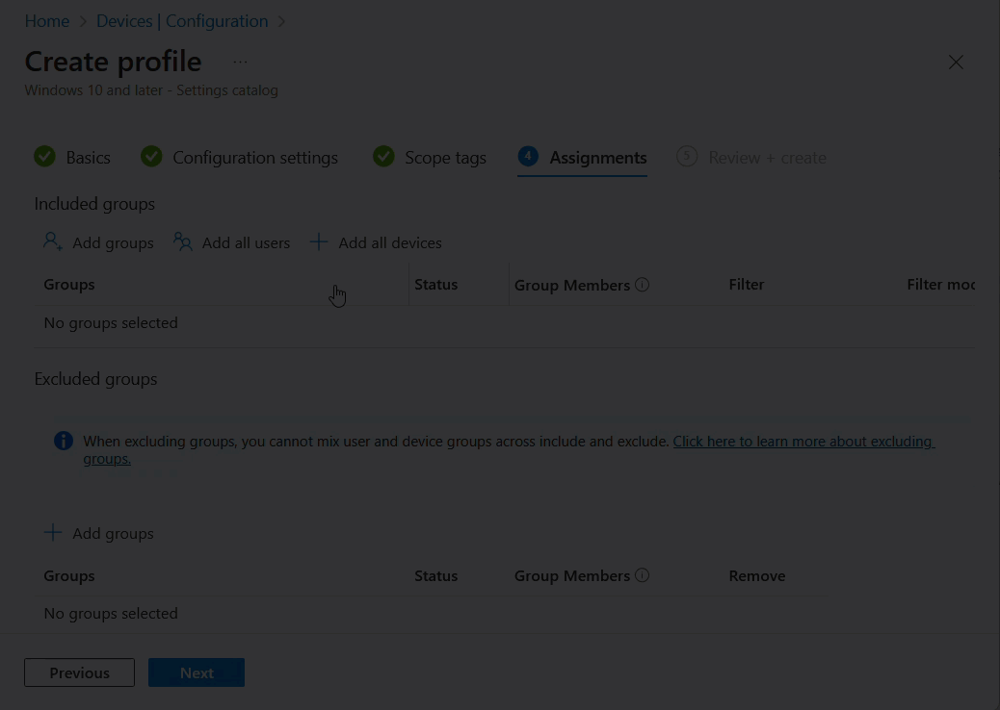
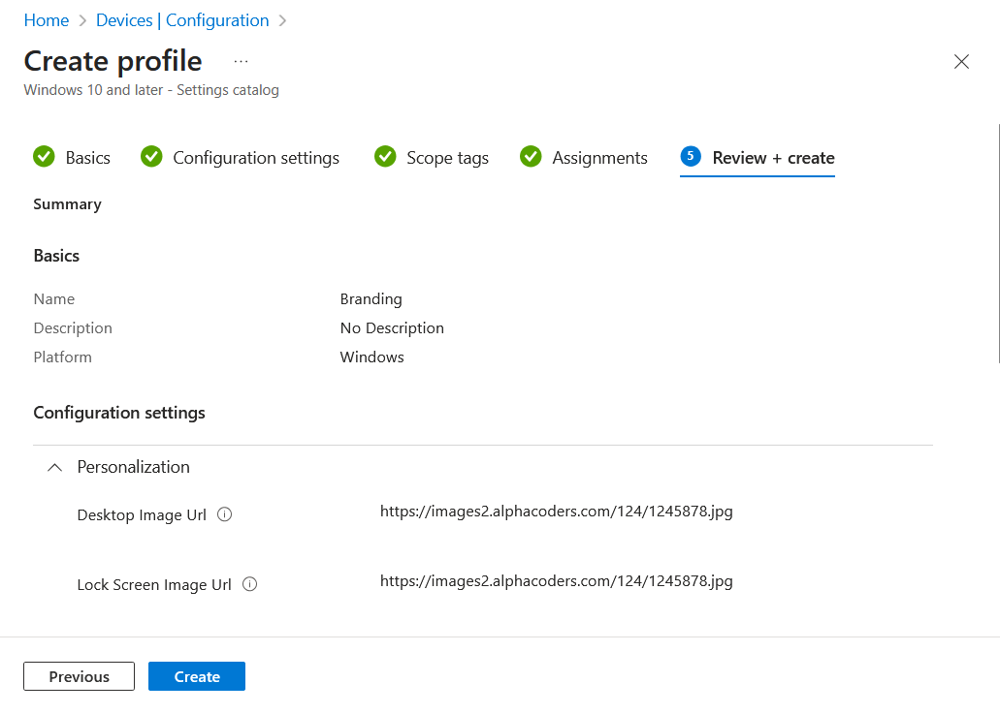
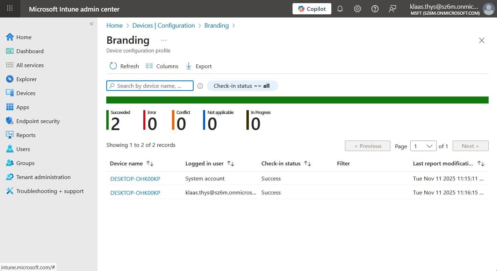
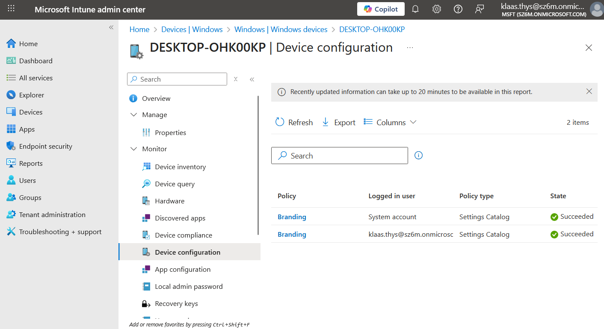

Configuration policies
In deze handleiding leer je een Intune configuration policy aanmaken en toepassen. Als voorbeeld configureren we een bureaubladachtergrond en een afbeelding voor het vergrendelscherm voor alle door Intune beheerde toestellen. We gebruiken de volgende afbeelding: https://images2.alphacoders.com/124/1245878.jpg
Microsoft Learn: Configure the desktop and lock screen backgrounds
1. Een nieuwe policy aanmaken
Zo maak je een nieuwe configuration policy aan:
- Ga in het menu naar Devices.
- Klik onder Manage devices op Configuration.
- Klik op de knop Create.
- Selecteer New Policy.

Wanneer je een configuration policy aanmaakt, moet je het type policy selecteren. Microsoft migreert geleidelijk van op sjablonen gebaseerde instellingen naar de Settings Catalog.
- Selecteer onder Platform Windows 10 and later.
- Kies bij Profile type Settings catalog.
- Klik op Create

2. Profielinstellingen
2.1. Basics
Geef een naam voor het configuratieprofiel in en geef eventueel extra details in het veld description.

2.2. Configuration settings
Selecteer in de settings picker één of meerdere instellingen die je in het configuratieprofiel wil configureren.

Geef daarna de gewenste waarden voor deze instellingen in.

2.3. Scope tags
Laat de standaardwaarde staan.

2.4. Assignments (groepen)
Selecteer de Security Group waarop je het configuratieprofiel wil toepassen. Configuratieprofielen kunnen worden toegewezen aan gebruikersgroepen of toestelgroepen, afhankelijk van of je wil dat het profiel de gebruiker volgt of enkel op toestellen wordt toegepast.
In dit voorbeeld wijzen we de configuratie toe aan alle Windows-toestellen.

- Gebruik toestelgroepen (device groups) wanneer het je niet uitmaakt wie er op het toestel aangemeld is, of wanneer er niemand aanmeldt. Je wil dat je instellingen altijd op het toestel staan.
- Gebruik gebruikersgroepen (user groups) wanneer je wil dat je instellingen en regels altijd met de gebruiker meegaan, ongeacht welk toestel hij gebruikt.
2.5. Review + create

In de laatste stap zie je een samenvatting van de instellingen die in deze policy geconfigureerd zijn en de groep(en) waarop ze worden toegepast.
Klik op de blauwe knop Create om de policy te finaliseren en uit te rollen.
Je kan de installatie van een app die via Intune is uitgerold versnellen door:
- De service Microsoft Intune Management Extension op je Windows-toestel te herstarten
3. Controleren
Als je geen toegang hebt tot de Windows-toestellen waarvoor je een profiel hebt geconfigureerd, kan je altijd Intune gebruiken om te controleren of het configuratieprofiel is toegepast.
3.1. Vanuit het configuratieprofiel
Volg onderstaande stappen om een rapport te bekijken met de toestellen waarop het configuratieprofiel is toegepast:
- Navigeer naar het configuratieprofiel dat je wil controleren.
- Klik op de blauwe knop “View Report”.
- Er verschijnt een lijst met alle toestellen waarop het configuratieprofiel is toegepast.

3.2. Vanuit het toestel
Volg onderstaande stappen om te zien welke configuratieprofielen op een specifiek toestel zijn toegepast:
- Navigeer naar het toestel dat je wil controleren.
- Klik in het middelste menu op “Device Configuration”.
- Je ziet een overzicht van alle configuratieprofielen die op dat toestel zijn toegepast.
